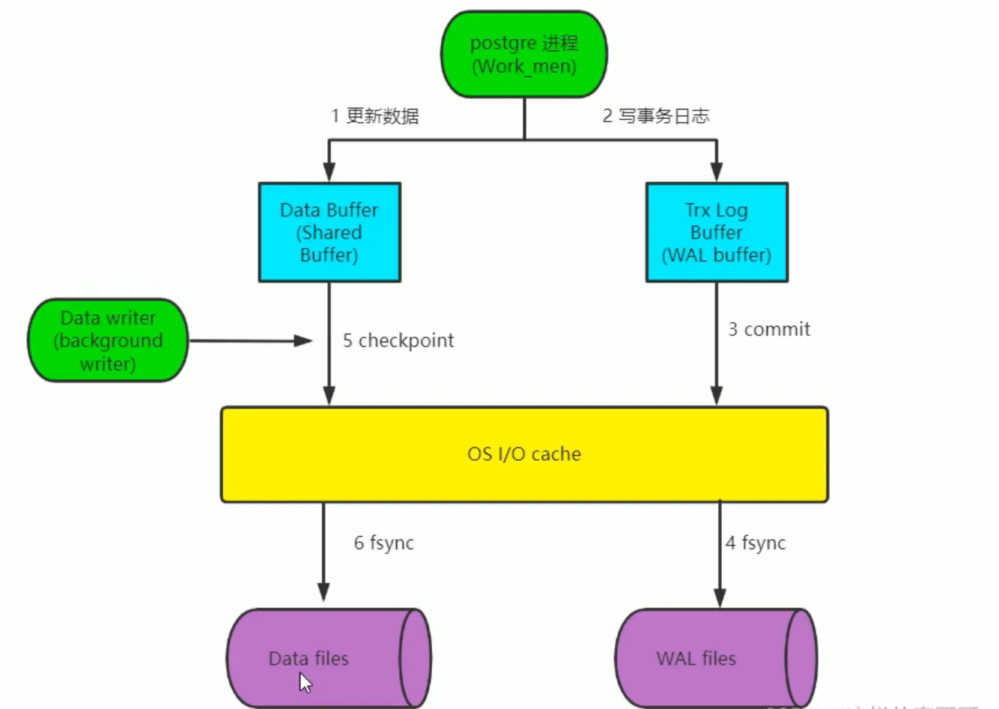
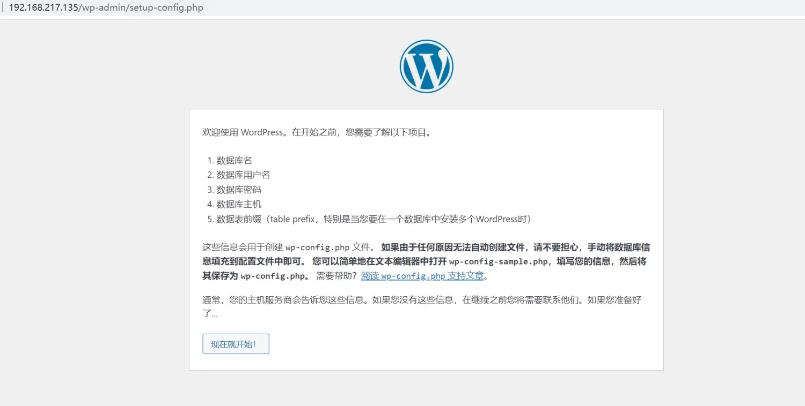

postgresql架构与原理 体系架构概览 PostgreSQL和MySQL相似,也采用典型的C/S模型。
PostgreSQL体系结构分两部分
实例 instance 包括
进程（客户端的响应进程，服务端的处理进程）
内存存储结构
PostgreSQL是进程架构模型，MySQL是线程架构模型
进程 Postmaster 主进程
它是整个数据库实例的主控制进程，负责启动和关闭该数据库实例。
实际上,使用pg ctl来启动数据库时，pg_ctl也是通过运行postgres来启动数据库的，只是它做了一些包装,更容易启动数据库。
它是第一个PostgreSQL进程，此主进程还会fork出其他子进程，并管理它们。
当用户和PostgreSQL建立连接时，首先是和Postmaster进程建立连接。首先，客户端会发出身份验证的信息给Postmaster进程，Postmaster进程根据消息中的信息进行身份验证判断，如果验证通过，它会fork出一个会话子进程为这个连接服务。
当某个服务进程出现错误的时候，Postmaster主进程会自动完成系统的恢复。恢复过程中会停掉所有的服务进程,然后进行数据库数据的一致性恢复,等恢复完成后，数据库又可以接受新的连接。
验证功能是通过配置文件pg_hba.conf和用户验证模块来提供。
postmaster 程序是指向postgres的软链接
[root@ubuntu2004 ~]
BgWriter 后台写进程
为了提高插入、删除和更新数据的性能，当往数据库中插入或者更新数据时，并不会马上把数据持久化到数据文件中,而是先写入Buffer中
该辅助进程可以周期性的把内存中的脏数据刷新到磁盘中
WalWriter 预写式日志进程（类似于mysql的事务日志 有了日志优点安全、速度快，缺点占用磁盘空间大、IO多一次—日志追加写入比直接随机写入数据库快
WAL是write ahead log的缩写，WAL log旧版中称为xlog，相当于MySQL中Redo log
预写式日志是在修改数据之前，必须把这些修改操作记录到磁盘中，这样后面更新实际数据时，就不需要实时的把数据持久化到文件中了。即使机器突然宕机或者数据库异常退出，导致一部分内存中的脏数据没有及时的刷新到文件中，在数据库重启后，通过读取WAL日志，并把最后一部分WAL日志重新执行一遍，就能恢复到宕机时的状态了
WAL日志保存在pg_wal目录(早期版本为pg_xlog) 下。每个xlog文件默认是16MB,为了满足恢复要求，在pg_wal目录下会产生多个WAL日志，这样就可保证在宕机后，未持久化的数据都可以通过WAL日志来恢复，那些不需要的WAL日志将会被自动覆盖
Checkpointer 检查点进程（数据写入到磁盘）
检查点(Checkpoints)是事务序列中的点,保证在该点之前的所有日志信息都更新到数据文件中。
在检查点时，所有脏数据页都冲刷到磁盘并且向日志文件中写入一条特殊的检查点记录。在发生崩溃的时候，恢复器就知道应该从日志中的哪个点（称做redo 记录）开始做 REDO操作，因为在该记录前的对数据文件的任何修改都已经在磁盘上了。在完成检查点处理之后，任何在redo记录之前写的日志段都不再需要，因此可以循环使用或者删除。在进行WAL 归档的时候，这些日志在循环利用或者删除之前应该必须先归档保存检查点(CKPT)在特定时间自动执行一个检查点,通过向数据库写入进(BgWriter) 传递消息来启动检查点请求。
AutoVacuum 自动清理进程
执行delete操作时，旧的数据并不会立即被删除，在更新数据时，也不会在旧的数据上做更新，而是新生成一行数据。旧的数据只是被标识为删除状态，在没有并发的其他事务读到这些旧数据时，它们才会被清除掉autovacuum lanucher负责回收垃圾数据的master进程,如果开启了autovacuum的话,那postmaster会fork这个进程
autovacuum worker 负责回收垃圾数据的worker进程,是lanucher进程fork出来的
PgStat 统计数据收集进程
此进程主要做数据的统计收集工作
收集的信息主要用于查询优化时的代价估算。统计的数据包括对一个表或索引进行的插入、删除、更新操作，磁盘块读写的次数以及行的读次数等。
系统表pg_statistic中存储了PgStat收集的各类统计信息
PgArch 归档进程
默认没有此进程,开启归档功能后才会启动archiver进程
WAL日志文件会被循环使用，也就是说WAL日志会被覆盖,利用PgArch进程会在覆盖前把WAL日志备份出来,类似于binlog,可用于备份功能
PostgreSQL 从8.X版本开始提供了PITR ( Point-In-Time-Recovery)技术，即就是在对数据厍进行过一次全量备份后，该技术将备份时间点后面的WAL日志通过归档进行备份，将来可以 使用数据库的全量备份再加上后面产生的WAL 日志，即可把数据库向前恢复到全量备份后的任意一个时间点的状态
SysLogger 系统日志进程
默认没有此进程,配置文件 postgresql.conf
设置参数logging_collect设置为“on”时，主进程才会启动SysLogger辅助进程
它从Postmaster主进程、所有的服务进程以及其他辅助进程收集所有的stderr输出，并将这些输出写入到日志文件中
startup 启动进程
Session 会话进程
每一个用户发起连接后，一旦验证成功,postmaster进程就会fork—个新的子进程负责连接此用户。
通常表现为进程形式： postgres postgres [local] idle
内存结构 PostgreSQL的内存空间包括共享内存和本地内存两部分
共享内存
PostgreSQL启动后，会生成一块共享内存，共享内存主要用做数据块的缓冲区，以便提高读写性能。WAL日志缓冲区和CLOG(Commit log)缓冲区也存在于共享内存中。除此以外，一些全局信息也保存在共享内存中，如进程信息、锁的信息、全局统计信息等。
PostgreSQL 9.3之前的版本与Oracle数据库一样，都是使用“SystemV”类型的共享内存，但到
PostgreSQL9.3之后，PostgreSQL使用mmap()方式共享内存,好处能使用较大的共享内 存。
本地内存
temp_buffers :用于访问临时表的本地缓冲区，默认为8M
work_mem:内部排序操作和Hash表在使用临时磁盘文件之前使用的内存缓冲区,默认为4M
maintenance_work_mem:在维护性操作(比如 VACUUM、CREATE INDEX和ALTERTABLE
1 2 3 4 5 6 7 8 9 10 11 12 13 14 15 postgres=
数据更新过程 
先将数据库文件中的更改的数据加载至内存
在内存更新数据
将日志写入内存WAL的缓存区
将日志提交，将日志写入操作系统 cache
同步日志到磁盘
后台写数据库的更新后的数据到操作系统 cache
写完数据后，更新检查点checkpoint
同步数据到磁盘
基于流复制完成postgresql的高可用 实验环境
内核优化 1 2 3 4 5 6 7 8 9 10 11 12 13 14 15 [root@pgsql-master ~]nproc 100000
打开远程连接 1 2 3 4 5 6 7 [root@rocky8 ~]'*'
主节点配置 1 2 3 4 5 6 7 8 9 10 11 12 13 14 15 16 17 18 19 20 21 22 23 24 25 26 27 28 29 [postgres@pgsql-master root]$vi /pgsql/data/pg_hba.conf $vi /pgsql/data/postgresql.conf'*' '[ ! -f /archive/%f ] && cp %p /archive/%f' $vi /pgsql/data/postgresql.conf'*' '[ ! -f /archive/%f ] && cp %p /archive/%f'
从节点配置 1 2 3 4 5 6 7 8 9 10 11 12 13 14 15 16 17 18 19 20 21 22 23 24 25 26 27 28 29 30 31 32 33 34 35 36 37 38 for checkpoint to completelog start point: 0/2000028 on timeline 1"pg_basebackup_21248" log end point: 0/2000138for background process to finish streaming ...'host=192.168.217.135 port=5432 user=repluser password=123456' 'cp /archive/%f %p' 'pg_log' 'postgresql-%Y-%m-%d.log'
监控同步状态 1 2 3 4 5 6 7 8 9 10 11 12 13 14 15 16 17 18 19 20 21 22 23 24 25 26 27 28 29 30 31 32 33 34 35 36 37 38 39 40 in production $psql "help" for help .sync sync
实现postgresql的时间点还原 场景说明 故障恢复过程
还原完全备份
归档日志恢复:
备份中的归档
恢复3:00到12:00之间的归档
恢复在线redo
备份 1 2 3 4 5 6 7 8 9 10 11 12 13 14 15 16 17 18 19 20 21 22 23 24 25 26 27 28 29 30 31 32 33 34 35 36 37 38 39 40 41 42 43 44 45 46 47 (1)在PGSQL服务器开启归档$vim /pgsql/data/postgresql.conf'[ ! -f /archive/%f ] && cp %p /archive/%f' $pg_ctl restart -D $PGDATA "testdb" as user "postgres" .'[ ! -f /archive/%f ] && cp %p /archive/%f'
还原 1 2 3 4 5 6 7 8 9 10 11 12 13 14 15 16 17 18 19 20 21 22 23 24 25 26 27 28 29 30 31 32 33 34 35 36 37 38 39 40 41 42 43 44 45 46 47 48 49 50 51 52 53 54 55 56 57 58 59 60 61 62 63 64 65 66 67 68 69 70 71 (1)在PG服务器上切换归档日志$pg_ctl stopdir 1663/24586'cp /archive/%f %p' '760' '2023-01-06 11:39:07' '0/04000290' "testdb" as user "postgres" .id in a read-only transactionin archive recovery in production
规划高可用的LAMP 实验环境
服务器配置 web服务器配置 1 2 3 4 5 6 7 8 9 10 11 12 13 14 15 16 17 18 19 20 (1)在LAP1和2机器上准备相关包和文件for 192.168.217.132:
mysql服务器配置 1 2 3 4 5 6 7 8 9 10 11 [root@mysql ~]'192.168.217.%' identified by '123456' ;'192.168.217.%' ;
NFS服务器配置 1 2 3 4 5 6 7 8 9 10 11 12 13 14 15 16 17 18 19 20 21 22 23 24 25 26 27 28 29 30 31 32 33 34 35 36 37 38 39 40 41 42 43 44 45 46 47 48 49 50 51 52 53 54 55 56 57 58 59 60 61 62 63 64 65 66 67 68 69 70 71 72 73 74 75 76 77 78 79 80 81 82 83 84 85 86 87 88 89 90 91 92 93 94 95 96 97 98 99 100 101 102 103 104 105 106 107 108 109 110 111 112 113 114 115 116 117 118 119 120 121 122 123 124 125 126 127 128 129 130 131 132 133 134 135 136 137 138 139 140 141 142 143 144 145 146 147 148 149 150 151 152 153 154 155 156 157 158 159 160 161 162 163 164 165 166 167 168 169 170 171 172 173 174 175 176 177 178 179 180 181 182 183 (1)NFS1基于存储wordpress图片设置log file = /var/log/rsyncd.logdir read only = no users = rsyncuser "1.0" encoding="ISO-8859-1" ?> head version="2.5" > "localhost" port="8008" ></host> "false" /> "false" /> "false" > "(.*)\.svn" ></exclude> "(.*)\.gz" ></exclude> "^info/*" ></exclude> "^static/*" ></exclude> "true" />"true" /> "false" /> "true" /> "true" /> "true" /> "true" /> "false" /> "/data/www" > "备份服务器IP" name="backup" /> "192.168.8.39" name="tongbu" />--> "192.168.8.40" name="tongbu" />--> "-artuz" /> "true" users ="rsyncuser" passwordfile="/etc/rsync.pas" /> true ,指定备份服务器的rsync配置的用户和密码文件 "false" port="874" /><!-- port=874 -->timeout start="false" time="100" /><!-- timeout =100 --> "false" /> "/tmp/rsync_fail_log.sh" timeToExecute="60" /><!--default every "false" schedule="600" ><!--600mins--> "false" > "*.php" ></exclude> "info/*" ></exclude> "false" name="command" /> "command" > "/bin/sh" suffix="" ignoreError="true" /> <!--prefix "false" > "(.*)\.php" /> "(.*)\.sh" /> "socket" > "/opt/tongbu" > "192.168.138.20" port="8009" /> "refreshCDN" > "/data0/htdocs/cms.xoyo.com/site/" > "ccms.chinacache.com" port="80" username="xxxx" "xxxx" /> "http://pic.xoyo.com/cms" />"false" match="cms.xoyo.com/site([/a-zA-Z0- 9]*).xoyo.com/images" /> set the system paramecho 50000000 > /proc/sys/fs/inotify/max_user_watchesecho 327679 > /proc/sys/fs/inotify/max_queued_eventscommand paramset the system paramecho 50000000 > /proc/sys/fs/inotify/max_user_watchesecho 327679 > /proc/sys/fs/inotify/max_queued_eventscommand paramlocal files to the remote servers before the sersync workset /etc/rsyncd.conf max connections=0 Manuallywait ...command : cd /data/www && rsync -artuz -R --delete ./ rsyncuser@192.168.217.131::backup --password-file=/etc/rsync.pas >/dev/null 2>&1
登录wordpress，并验证数据的存储 浏览器输入网址：192.168.217.135（可做dns） 
连接数据库，设置账户，登录
编写文章，并查看文章
web服务器查看存储位置
查看NFS1主服务器是否存储
查看NFS2备份服务器是否共享
redis数据类型
Binary-safe strings , 简单的K-V 结构的存储Lists , 按插入顺序排序的字符串元素集合。基本上就是链表Sets ,唯一的，不排序的集合Sorted sets ,类似于集合，但每个字符串元素都与一个称为score的浮数值相关联,元素总是按分数排序，因此与集合不同，可以检索一系列元素Hashes , 由与值关联的字段组成的映射。字段和值都是字符串Bit arrays (or simply bitmaps) , 可以使用特殊命令处理字符串值HyperLogLogs , 这是一个概率数据结构，用于估计集合的基数Streams ,仅附加的类似于地图的条目集合，提供抽象日志数据类型
strings字符串 strings可以用来存储 k-v 结构的数据,做计数器等;
1 2 3 4 5 set <key> <value>
lists列表 Lists可以用来实现粉丝列表,评论列表等；
1 2 3 4 5 6 7 8 9 lpush <key> <value>
sets集合 Sets ,可以利用其无序,唯一(自动去重)的特性，例如，共同好友(用到了 SINTER 命令)等;
执行sadd <key> <value> , 成功返回1,数据已存在返回0,数据类型不对返回异常
1 2 3 4 5 6 sadd <key> <member> <member...>
sorted sets有序集合 Sorted sets,用来做排名等;
zadd 命令如果已存在会覆盖
1 2 3 4 zadd <key> <score> <member>
hashes哈希 Hashes , 用来存储个人信息等;
1 2 3 hset <key> <field> <value>
redis RDB和AOF比较 Redis 中数据的持久化 前言
我们知道 Redis 是内存数据库，所有操作都在内存上完成。内存的话，服务器断电，内存上面的数据就会丢失了。这个问题显然是需要解决的。
Redis 中引入了持久化来避免数据的丢失，主要有两种持久化的方式 RDB 持久化和 AOF 持久化。
AOF 持久化 什么是 AOF 持久化 AOF(Append Only File):通过保存数据库执行的命令来记录数据库的状态。
AOF日志对数据库命令的保存顺序是，Redis 先执行命令，把数据写入内存，然后才记录日志。
为什么要后记录日志呢 后写，能够避免记录到错误的命令。因为是先执行命令，后写入日志，只有命令执行成功了，命令才能被写入到日志中。
避免阻塞当前的写操作，是在命令执行后才记录日志，所以不会阻塞当前的写操作。
AOF 的潜在风险 如果命令执行成功，写入日志的时候宕机了，命令没有写入到日志中，这时候就有丢失数据的风险了，因为这时候没有写入日志，服务断电之后，这部分数据就丢失了。
这种场景在别的地方也很常见，比如基于 MQ 实现分布式事务，也会出现业务处理成功 + 事务消息发送失败这种场景，RabbitMQ，RocketMQ，Kafka 事务性，消息丢失和消息重复发送的处理策略
AOF 日志写入也是在主线程进行的，如果磁盘的压力很大，写入速度变慢了，会影响后续的操作。
这两种情况可以通过调整 AOF 文件的写入磁盘的时机来避免
AOF 文件的写入和同步 AOF 文件持久化的功能分成三个步骤，文件追加(append),文件写入，文件同步(sync)。
AOF 文件在写入磁盘之前是先写入到 aof_buf 缓冲区中，然后通过调用 flushAppendOnlyFile 将缓冲区中的内容保存到 AOF 文件中。
写入的策略通过 appendfsync 来进行配置
Always：同步写回 每次操作命令执行完后，同步将 AOF 日志数据写回硬盘；
Everysec：每秒写回 每次操作命令执行完后，先将命令写入到 AOF 文件的内核缓冲区，然后每隔一秒将缓冲区里的内容写回到硬盘；
No：操作系统控制的写回 Redis 不在控制命令的写会时机，交由系统控制。每次操作命令执行完成之后，命令会被放入到 AOF 文件的内核缓冲区，之后什么时候写入到磁盘，交由系统控制。
AOF 文件重写机制 因为每次执行的命令都会被写入到 AOF 文件中，随着系统的运行，越来越多的文件会被写入到 AOF 文件中，这样 AOF 文件势必会变得很大，这种情况该如何去处理呢？
为了解决这种情况，Redis 中引入了重写的机制
什么是重写呢？
因为 AOF 文件中记录的是每个命令的操作记录，举个，比如当一个键值对被多条写命令反复修改时，AOF文件会记录相应的多条命令，那么重写机制，就是根据这个键值对当前的最新状态，为它生成对应的写入命令，保存成一行操作命令。这样就精简了 AOF 文件的大小。
1 2 3 4 5 6 7 8 9 10 11 192.168.56.118:6379> set name "xiaoming" "xiaoming" set name "xiaozhang" set name "xiaoli" set name "xiaoli"
简单来讲就是多变一，就是把 AOF 中日志根据当前键值的状态，合并成一条操作命令。
重写之后的文件会保存到新的 AOF 文件中，这是旧的 AOF 文件和新的 AOF 文件中键值对应的状态是一样的。然后新的 AOF 文件会替换掉旧的 AOF 文件，这样 重写操作一直在进行，AOF 文件就不至于变得过大。
重写是后台进行的， AOF 重写会放到子进程中进行的，使用子进程的优点：
1、子进程处理 AOF 期间，不会影响 Redis 主线程对数据的处理；
2、子进程拥有所在线程的数据副本，子进程能够避免锁的使用，保证数据的安全。
这里来看下，AOF 的处理流程
AOF 重写也有一个缓冲区，当服务节接收到新的命令的时候，如果在正在进行 AOF 重写，命令同样也会被发送到 AOF 缓冲区的进程执行 AOF 重写的过程,服务端进程主要处理以下内容
1、接收并处理客户端发送的命令；
2、将执行后的命令写入到 AOF 缓冲区；
3、将执行后的命令也写入到 AOF 重写缓冲区；
AOF 缓冲区和 AOF 重写缓冲区中的内容会被定期的同步到 AOF 文件和 AOF 重写文件中
当子进程完成重写的时候，会给父进程发送一个信号，这时候父进程主要主要进行下面的两步操作：
1、将 AOF 重写缓冲区中的内容全部写入到 AOF 重写文件中，这时候重写 AOF 文件保存的数据状态是和服务端数据库的状态一致的；
2、将 AOF 重写文件替换旧的 AOF 文件；
通过 AOF 的重写操作，新的 AOF 文件不断的替换旧的 AOF 文件，这样就能控制 AOF 文件的大小
AOF的数据还原 AOF 文件包了重建数据库索引锁需要的全部命令，所以只需要读入并重新执行一遍 AOF 文件中保存的命令，即可还原服务关闭之前数据库的状态。
RDB 持久化 什么是 RDB 持久化 RDB(Redis database)：实现方式是将存在 Redis 内存中的数据写入到 RDB 文件中保存到磁盘上从而实现持久化的。
和 AOF 不同的是 RDB 保存的是数据而不是操作，在进行数据恢复的时候，直接把 RDB 的文件读入到内存，即可完成数据恢复。
RDB 如何做内存快照 Redis 中对于如何备份数据到 RDB 文件中，提供了两种方式
save: 在主线程中执行，不过这种会阻塞 Redis 服务进程；
bgsave: 主线程会 fork 出一个子进程来负责处理 RDB 文件的创建，不会阻塞主线程的命令操作，这也是 Redis 中 RDB 文件生成的默认配置；
对于 save 和 bgsave 这两种快照方式，服务端是禁止这两种方式同时执行的，防止产生竞争条件。
Redis 中可以使用 save 选项，来配置服务端执行 BGSAVE 命令的间隔时间
1 2 3 4 5 6 7 8 9 10 11 12 13 14 15 16 17 18 19 20 21 22 23 24
save 900 1 就是服务端在900秒，读数据进行了至少1次修改，就会触发一次 BGSAVE 命令
save 300 10 就是服务端在300秒，读数据进行了至少10次修改，就会触发一次 BGSAVE 命令
快照时发生数据修改 举个栗子：我们在t时刻开始对内存数据内进行快照，假定目前有 2GB 的数据需要同步，磁盘写入的速度是 0.1GB/s 那么，快照的时间就是 20s，那就是在 t+20s 完成快照。
如果在 t+6s 的时候修改一个还没有写入磁盘的内存数据 test 为 test-hello。那么就会破坏快照的完整性了，因为 t 时刻备份的数据已经被修改了。当然是希望在备份期间数据不能被修改。
如果不能被修改，就意味这在快照期间不能对数据进行修改操作，就如上面的栗子，快照需要进行20s,期间不允许处理数据更新操作，这显然也是不合理的。
这里需要聊一下 bgsave 是可以避免阻塞，不过需要注意的是避免阻塞和正常读写操作是有区别的。避免阻塞主线程确实没有阻塞可以处理读操作，但是为了保护快照的完整性，是不能修改快照期间的数据的。
这里就需要引入一种新的处理方案，写时复制技术（Copy-On-Write, COW），在执行快照的同时，正常处理写操作。
bgsave 子进程是由主线程 fork 生成的，所以是可以共享主线程的内存的，bgsave子进程运行后会读取主线程中的内存数据，并且写入到 RDB 文件中。
写复制技术就是，如果主线程在内存快照期间修改了一块内存，那么这块内存会被复制一份，生成该数据的副本，然后 bgsave 子进程在把这段内存写入到 RDB 文件中。这样就可以在快照期间进行数据的修改了。
多久做一次快照 对于快照，如果做的太频繁，可能会出现前一次快照还没有处理完成，后面的快照数据马上就进来了，同时过于频繁的快照也会增加磁盘的压力。
如果间隔时间过久，服务器在两次快照期间宕机，丢失的数据大小会随着快照间隔时间的增长而增加。
是否可以选择增量式快照呢？选择增量式快照，我们就需要记住每个键值对的状态，如果键值对很多，同样也会引入很多内存空间，这对于内存资源宝贵的Redis来说，有些得不偿失。
相较于 AOF 来对比，RDB 是会在数据恢复时，速度更快。但是 RDB 的内存快照同步频率不太好控制，过多过少都有问题。
Redis 4.0中提出了一个混合使用 AOF 日志和内存快照的方法。简单来说，内存快照以一定的频率执行，在两次快照之间，使用AOF日志记录这期间的所有命令操作。
通过混合使用AOF日志和内存快照的方法，RDB 快照的频率不需要过于频繁，在两次 RDB 快照期间，使用 AOF 日志来记录，这样也不用考虑 AOF 的文件过大问题，在下一次 RDB 快照开始的时候就可以删除 AOF 文件了。
过期的键如何持久化 在生成 RDB 文件的过程中，如果一个键已经过期，那么其不会被保存到 RDB 文件中。在载入 RDB 的时候，要分两种情况：
如果 Redis 以主服务器的模式运行，那么会对 RDB 中的键进行时间检查，过期的键不会被恢复到 Redis 中。
如果 Redis 以从服务器的模式运行，那么 RDB 中所有的键都会被载入，忽略时间检查。在从服务器与主服务器进行数据同步的时候，从服务器的数据会先被清空，所以载入过期键不会有问题。
对于 AOF 来说，如果一个键过期了，那么不会立刻对 AOF 文件造成影响。因为 Redis 使用的是惰性删除和定期删除，只有这个键被删除了，才会往 AOF 文件中追加一条 DEL 命令。在重写 AOF 的过程中，程序会检查数据库中的键，已经过期的键不会被保存到 AOF 文件中。
在运行过程中，对于主从复制的 Redis，主服务器和从服务器对于过期键的处理也不相同：
对于主服务器，一个过期的键被删除了后，会向从服务器发送 DEL 命令，通知从服务器删除对应的键；
从服务器接收到读取一个键的命令时，即使这个键已经过期，也不会删除，而是照常处理这个命令；
从服务器接收到主服务器的 DEL 命令后，才会删除对应的过期键。
这样保证了数据的一致性，一个键值对存在于主服务器，也必然存在于从服务器。
总结 AOF
优点：AOF 中有三种策略可以进行选择，AOF 的默认策略为每秒钟 fsync 一次，在这种配置下，Redis 仍然可以保持良好的性能，并且就算发生故障停机，也最多只会丢失一秒钟的数据。
缺点：AOF 文件体积一般情况下比 RDB 文件体积大，并且数据还原速度也慢于 RDB。
RDB
优点：可以快速恢复数据，相比于 AOF 的顺序，逐一执行操作命令，效率更高；
缺点：因为是内存快照，频率过快，过慢，都会有响应的问题。过快，浪费磁盘资源，会给磁盘造成压力，过慢会存在较多数据丢失的问题。
Redis 4.0中提出了一个混合使用 AOF 日志和内存快照的方法，如果想要保证数据不丢失，这是一个比较好的选择；
如果允许分钟级别的数据丢失，可以只使用RDB；
如果只用AOF，优先使用 everysec 的配置选项，因为它在可靠性和性能之间取了一个平衡。
redis配置文件详解 1 vim /etc/redis/redis.conf
单位
include 包含
网络
1 2 3 4 5 bind 127.0.0.1 yes
GENERAL 通用
1 2 3 4 5 6 7 8 9 10 11 12 13 14 15 16 17 yes ""
快照 SNAPSHOTTING
1 2 3 4 5 6 7 8 9 10 11 12 yes yes yes dir ./
REPLICATION主从复制
1 2 replication 主机pi 主机端口
SECURITY安全
1 2 3 4 set requirepass "123456"
CLIENTS限制
1 2 3 4 5 6 7 8 9 maxclients 10000
APPEND ONLY 模式 aof配置
1 2 3 4 5 6 7 8 9 appendonly no "appendonly.aof"